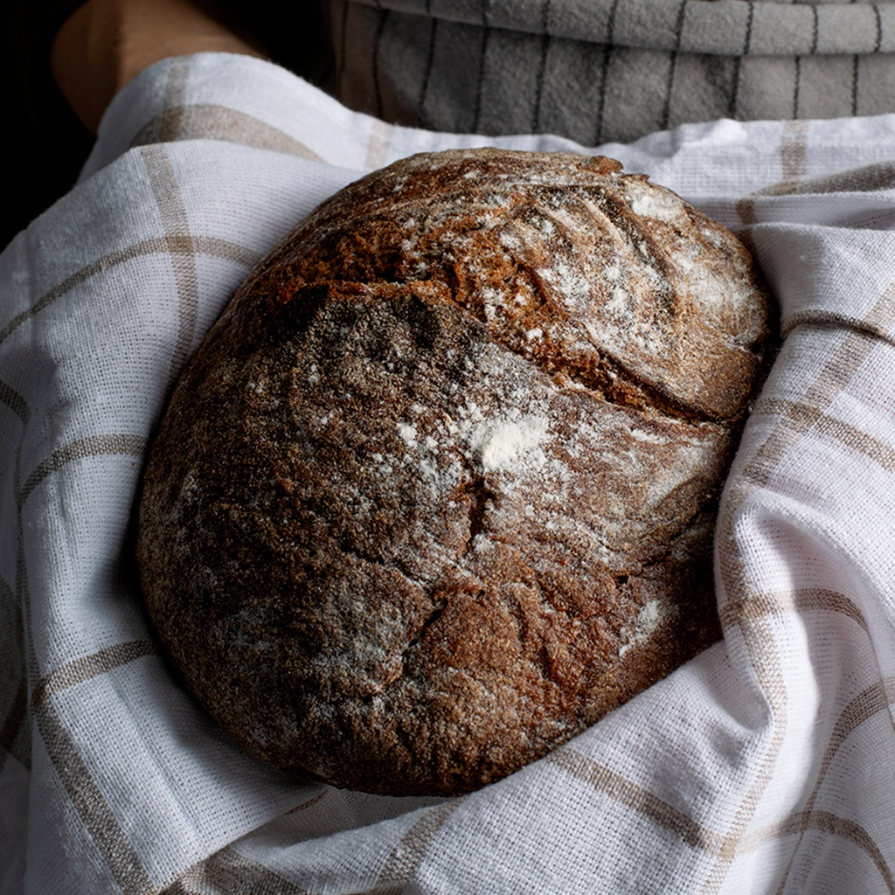
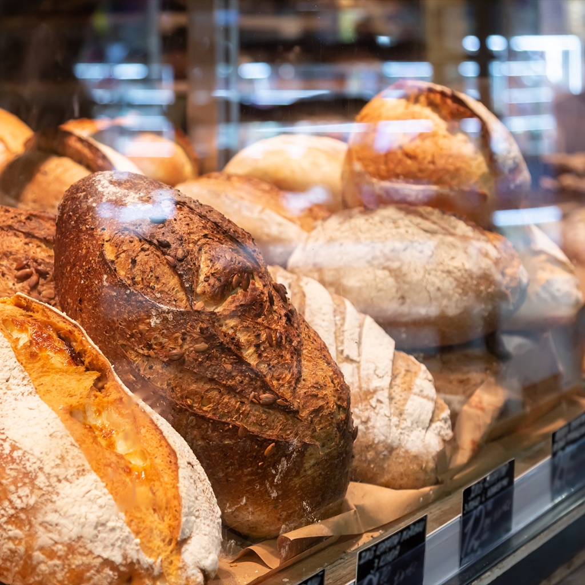

Our Freshly Baked Bakery Selection
Explore our complete offerings of artisan sourdough loaves, morning breakfast pastries, and custom occasion cakes. All items are baked from scratch daily in limited quantities using certified organic grains and pure ingredients. No online checkout is required—simply reserve your favorites in advance on our contact page for easy in-store pickup.
Save Your Bakery Favorites
Save items for your next visit. Your favorites stay in this browser; saving an item does not place an order.
Your saved list
Artisan Breads (Price Range: $4.50 – $10.00)
Our signature loaves undergo a gradual 24 to 36-hour wild sourdough fermentation that develops rich aromatics, an open airy crumb, and a crisp stone-baked crust.

Bread Varieties
- North Star Country Sourdough ($8.50): Our flagship rustic boule made with organic wheat and stone-ground rye flours.
- Seeded Whole Rye Batard ($9.00): Wholesome dark rye encrusted with toasted flax, sesame, and pumpkin seeds.
- Rosemary Garlic Hearth Loaf ($9.50): Infused with roasted whole garlic cloves and fresh garden rosemary.
- Toasted Cranberry Walnut Boule ($10.00): Sweet-tart cranberries and toasted California walnuts folded into sourdough.
- Traditional French Baguette ($4.50): Classic French baguette with a thin, crackling golden crust and tender interior.
- Olive Oil Ciabatta ($6.00): High-hydration Italian loaf with large air pockets, ideal for panini and sandwiches.

Handcrafted Pastries (Price Range: $3.50 – $5.50)
Crafted by hand every morning using traditional lamination techniques, European cultured butter, and fair-trade chocolate.
- Butter Croissant ($4.25): Flaky, multi-layered golden pastry with an airy honeycomb crumb.
- Pain au Chocolat ($4.75): Buttery croissant dough filled with two rich batons of Belgian dark chocolate.
- Morning Cinnamon Twist ($4.50): Brioche ribbon rolled with dark brown sugar, butter, and Vietnamese cinnamon.
- Sea Salt Chocolate Chunk Cookie ($3.50): Soft and chewy cookie packed with dark chocolate chunks and Maldon flaky sea salt.
- Seasonal Fruit Galette ($5.50): Free-form flaky pastry crust filled with seasonal berries and stone fruits.
Artisan Cakes & Tarts (Price Range: $28.00 – $55.00)
Designed for family gatherings, office milestones, and weekend celebrations. Available by 48-hour advance pre-order.
- Classic Vanilla Bean Sponge Cake (6-inch: $32.00 / 8-inch: $46.00): Tender chiffon layers filled with organic strawberry preserves and vanilla buttercream.
- Bittersweet Chocolate Ganache Torte (8-inch: $48.00): Dense, fudgy chocolate torte glazed with 70% dark chocolate ganache.
- Meyer Lemon Olive Oil Cake (9-inch: $28.00): Moist, fragrant citrus cake glazed with lemon blossom syrup.
- Rustic Seasonal Berry Tart (9-inch: $35.00): Sweet shortbread crust layered with vanilla pastry cream and fresh berries.
Ready to reserve your bread or order a celebration cake? Submit a request via our Contact & Pre-Orders page.